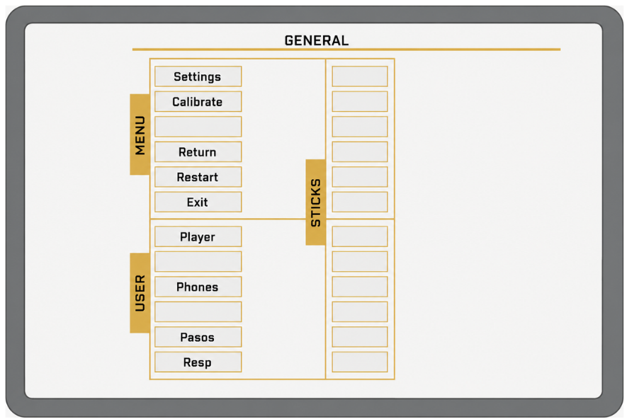
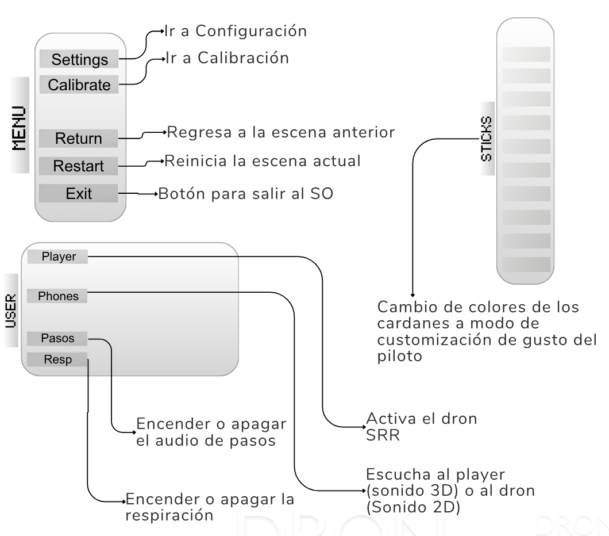
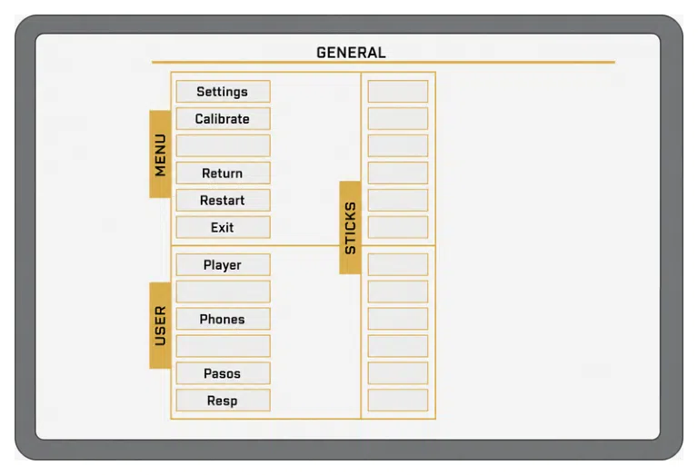
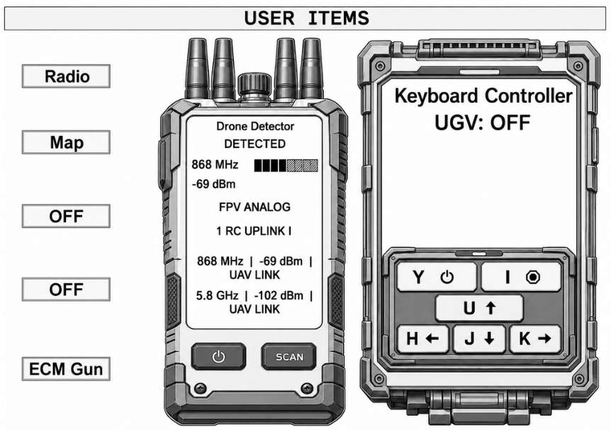
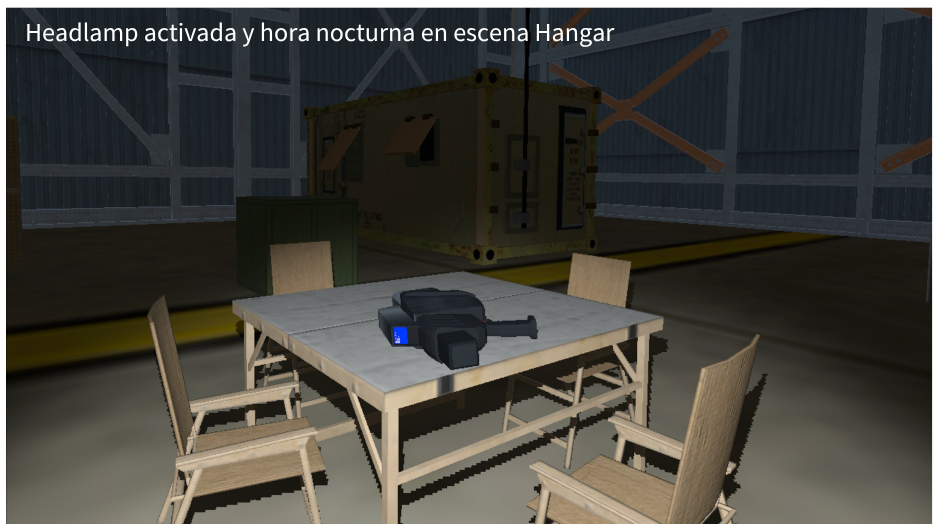
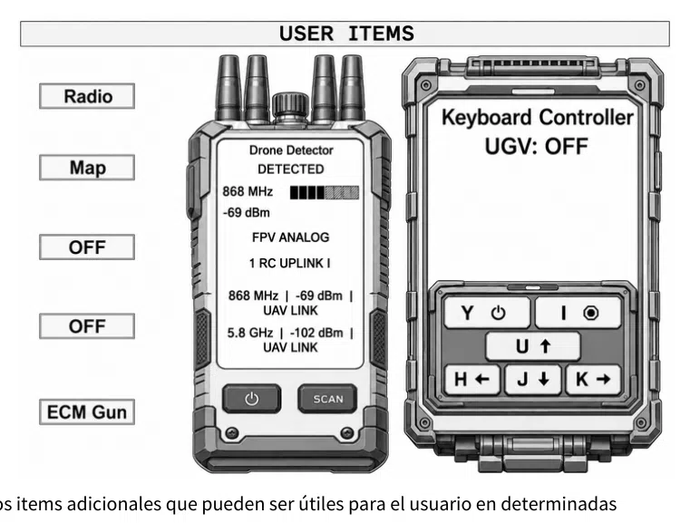

General e Items
Guía de consulta basada en el manual original. Las páginas del PDF se abren en otra pestaña y las capturas pueden consultarse sin perder tu lugar.
PÁGINA 139 Panel de configuración - General


Ver recorte anterior de la página (referencia)

Panel de configuración - General
Este panel contiene algunos botones útiles a modo de menú de aplicación
General
Ir a Configuración
Settings
Ir a Calibración
Calibrate
Regresa a la escena anterior
Return
MENU
STICKS
Reinicia la escena actual
Restart
Exit
Botón para salir al SO
Player
Phones
USER
Pasos
Resp
Cambio de colores de los cardanes a modo de customización de gusto del piloto Activa el dron SRR Encender o apagar el audio de pasos
Escucha al player (sonido 3D) o al dron (Sonido 2D)
Encender o apagar la respiración
PÁGINA 140 Panel de configuración - Items


Ver recorte anterior de la página (referencia)

Panel de configuración - Items
Contiene algunos items adicionales que pueden ser útiles para el usuario en determinadas circunstancias.
Items
Contiene algunos items adicionales que pueden ser útiles para el usuario en determinadas circunstancias.
Headlamp activada y hora nocturna en escena Hangar
Radio: Habilita o deshabilita una radio tipo militar para guardar coordenadas NVG: Habilita o desabilita el visor nocturno que tiene varios modos: verde, azulado, ambar, digital Puede activarse/desactivarse con el botón o con la tecla N
ECM Gun: Habilita el arma antidrones, que en las versiones anteriores esta no tenía interacción, actualmente tiene un display básico e interactúa con otros drones en escena Lamp: Habilita o deshabilita la linterna minera. Tiene modos de luz fría, cálida y roja
Map: Habilita o deshabilita el mapa sobre el escritorio